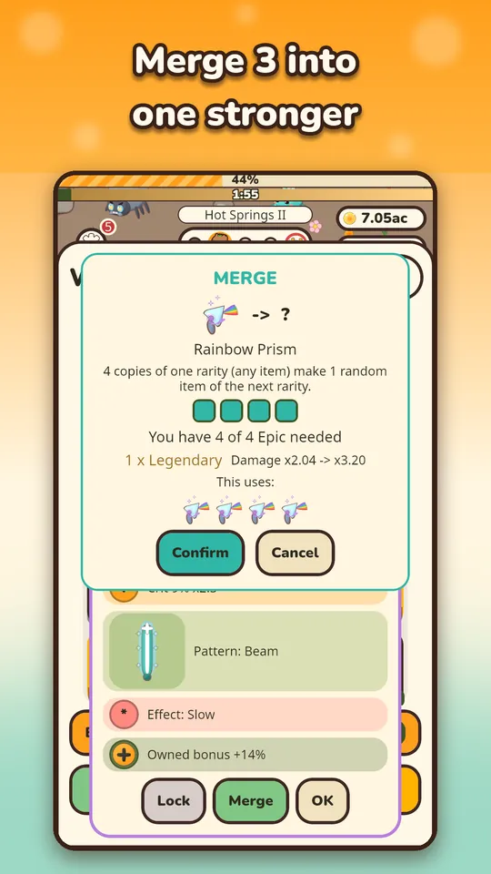
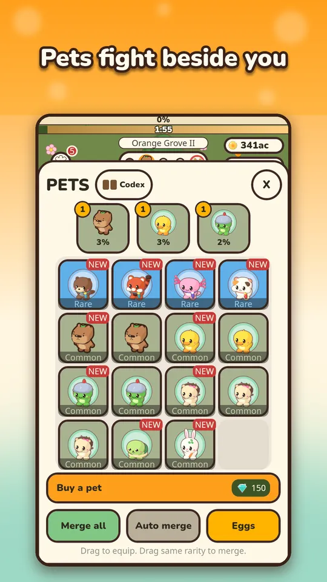

The question I hear most about Capy Kingdom is what to upgrade first to progress faster. There is no secret order, but there is a sensible one, and a few ways to waste gems. Here is how I would spend my resources if I were starting a fresh save, with facts taken from how the game is actually built.
Coins: keep all three cards moving
You have three coin sinks: Power, Speed and Money. Because costs grow with each level, the cheapest next level is usually the best value, which means all three cards deserve attention.
- Power raises the damage of your shots. It is the card that breaks boss walls.
- Speed is run speed. The hero walks along a winding trail from fight to fight, so a faster hero finishes stages sooner. The run speed has a cap, so Speed is not a card to pour everything into forever.
- Money increases coin income, so it pays back every other purchase.

Use the x10, x100 and Max buttons once your coins allow it, since tapping a single level at a time wastes your attention. If tapping gets tedious, there is an optional Auto upgrade button on the combat screen. For the very first minutes, my beginner tips have a simpler version of this advice.
Gems: crates and eggs before anything else
Gems come from missions, the login calendar, the Diamond Spring, achievements and first clears of stages. Spend them where the game shows you the odds: Weapon Crates and Pet Eggs list every rarity chance before you open one. The Buy a weapon and Buy a pet buttons exist too, starting at 100 and 150 gems, and each earlier purchase makes the next a little more expensive. They always give a random Common, so I would not make them your first choice.
Buys and merge results only draw from rarities your best stage has unlocked: Rare at stage 10, Epic at stage 25, Legendary at 60 and Mythic at 120. That means early gems are not urgent, and a few days of play will make the same gems stretch further.
Weapons: equip first, merge second
Your equipped weapon sets how hard each shot hits and how it behaves, from single shots to beams and spreads. Higher rarity means more damage on the equipped weapon, and every item you own also adds a small global bonus. So even weapons you are not using help you.

Merging combines several items of one kind and one rarity into a random item of the next rarity. The number you need depends on the rarity, and the dialog shows it, along with the damage change. In the example above, 4 Epics make 1 Legendary and take damage from x2.04 to x3.20. Locked and equipped items are protected, and big merges ask first, so you cannot ruin your setup by mistake. Merge all and Auto merge buttons are there if you collect a lot.
- Lock any item you love before you merge the rest.
- Merge when you have a pile of duplicates, not one at a time.
- Remember that a merge picks a random item of the next rarity.

Pets: free damage and free trips
Pets fight beside you automatically, and each has its own passive perk, for example more coins, faster attacks, more crits, boss damage, offline earnings or diamond generation. Equip the pets with perks you value and merge the rest the same way as weapons. Pets that are not equipped can go on trips, which run from 30 minutes up to 8 hours and pay rewards when they return. A trip started before bed is free value.
The big upgrade: rebirth
No amount of coin spending replaces rebirth in the long run. When your coin upgrades stop beating the same boss, resetting for Golden Yuzu is the faster path, and the Yuzu Tree has 44 permanent perks to buy. The rebirth guide covers how to decide when to do it. If you want to compare this approach with other games in the genre, the idle shooter overview is a good place to start.
Common mistakes to avoid
- Pouring everything into one card. Costs climb with every level, so a lopsided build stalls early.
- Leaving items unequipped. A great weapon in your collection does nothing until you drag it into the slot.
- Merging without looking. Read the dialog. It shows what the merge uses and what you gain, and you can cancel.
- Ignoring the stage timer. If a stage keeps timing out, you are underpowered for it, not unlucky. Farming the step before it earns coins while you grow.
- Forgetting offline time. Coins collected after a long break are some of the cheapest progress in the game.
A practical order
- Spend coins across all three cards, using the bulk buttons.
- Open crates and eggs with gems, and equip the best weapon and pets.
- Merge duplicates, locking favorites first.
- Start trips before you leave, claim the Diamond Spring, collect offline coins.
- Rebirth when a boss wall holds for a long time.
Try it
Everything here is optional, and nothing has to be bought to progress. Download Capy Kingdom on Google Play and try this order for a day.
Frequently Asked Questions
Which Capy Kingdom upgrade is best, Power, Speed or Money?
No single card wins. Power breaks boss walls, Speed makes the hero run faster between fights, and Money speeds up everything else. Keep all three moving and lean on Power when a boss blocks you.
How does merging work in Capy Kingdom?
You merge several items of the same kind and rarity into one random item of the next rarity. A merge dialog shows how many you need, what it uses and the damage change, and locked or equipped items are protected.
Should I spend gems on crates or on buying items?
Both work, but crates and eggs show their odds first, while the Buy a weapon and Buy a pet buttons give one random Common item and cost more with each purchase. For most players, crates and eggs are the better first spend.